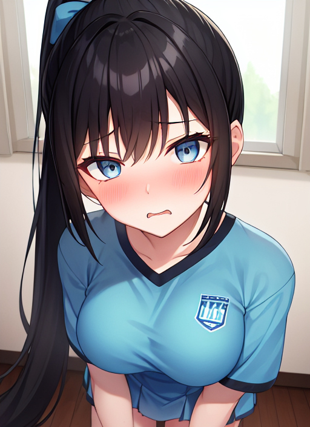

帰宅部廃止運動
ある中学校で｢帰宅部廃止運動｣というものが発令された。その名の通り、帰宅部を全員部活に入れさせるものだ。これはある2人の帰宅部の少年の物語である。
｢はぁ...今日は学校行くか...｣
彼の名前は瀬戸碧月。引きこもり気味で内気な中学生だ。だが、今日は自分のせいで両親の仲が悪化してきていることを気にして学校に行くようだ。
登校中も彼はずっとため息をついていた。うつむきながら校門を通り、昇降口へ向かっている時だった。
｢うぇ？｣
何者かに後ろから首根っこを捕まれ、どこかに連れていかれたのだ。引きこもりの碧月にそれを振り払う力はない。
数十秒程振り回された後、どこか固いところに放り投げられた。
｢うっ...な、何するんですか...｣
周りを見ると、そこが体育倉庫だということがわかる。前を見ると、そこには複数人の女子生徒がいた。格好を見ると、そのいずれもチアリーディング部であることが容易に想像できる。
｢えーっと、瀬戸碧月君だっけ？君、帰宅部廃止運動だってのに入部届けどこに出さなかったでしょ？｣
｢...え？何ですかそれ...帰宅部廃止...？｣
もちろん碧月はすっとぼけてるわけではなく、本当に知らない。家にずっと引きこもっていて、友達がいるわけでもないため、学校の情報をほとんど持っていないのだ。
しかし、女子生徒達はそんな碧月などお構い無しだ。
｢とぼけたって無駄なんだよ。入らなかったことは事実なんだから、こっちで無理矢理どこに入れるか決めたから｣
｢い、いや、ちょっと待って...｣
話の展開が早すぎて碧月はついていけないが、そんな碧月の声を無視して女子生徒は話を続ける。
｢瀬戸碧月君は、本日からチアリーディング部に入ることになりましたー！そういうわけだから...それっ！｣
一人が、そう声をかけると碧月の身体が謎の光に包まれ始めた。やがて全身を完全に光に包まれる。
｢フフフ、成功じゃない？｣
女子生徒達はにやけながらその光が消えるのを待った。数秒すると、その光はじわりじわりと消えていった。だが、そこにいたのは見慣れない姿だった。
｢うっ...はぁ...な、何ですか...今の...ん？｣
自然下を向く碧月。そこに、今まで着ていた制服は無かった。黄色と水色で形成されたプリーツスカートとユニフォーム。そこから出てくる腕や脚は毛の一本もなく、白く美しいだけだ。寝癖だらけの茶髪はいつの間にか伸びていて、白にピンクの水玉模様のシュシュでポニーテールにされている。両手には黄色いポンポンを握らされている。その姿は目の前の女子生徒達と同じ、チアガールの姿だったのだ。
｢う、うわあっ！な、何ですかこれ！ど、どうなってるんですか！｣
驚く碧月に対して女子生徒は冷静に答える。
｢さっき言ったでしょ？チアリーディング部に入ってもらうって。だからユニフォームも着せてあげたの。可愛いでしょ？碧月君。あ、今は結姫ちゃんって呼ぼうかな｣
結姫は冷静に今の状況を整理しようとした。だが、予想外で非現実的なことばかり起こっているため、何一つ整理できなかった。
｢じゃあ結姫ちゃん！チアリーディング部に入ったのなら、ちゃんと踊れるよね？｣
｢い、いや、ちょっと待ってくださいよ。今どうなってるのか詳しく...｣
｢はい、ミュージックスタート！｣
女子生徒の声に合わせて応援歌らしき曲が再生される。もちろん結姫は知らない曲なので、踊れるはずもない。しかし、現実は違った。
｢あ、あれ？な、なんか勝手に身体が動く...！や、やだ、やめて！止めて！｣
｢ウフフ、どうして？結姫ちゃん、すっごく輝いてるよ？綺麗な脚が交互に上がって...あ、パンツ見えちゃった｣
｢はあっ...やめて...！｣
慣れない激しい運動と恥ずかしさで顔はどんどん赤らんでいく。揺れ動くポンポンから発せられる音が、自分がチアガールとして踊っているということを結姫に意識させる。首筋に当たるポニーテールの毛先が、今自分が女の子の姿であることを結姫に意識させる。
｢ほらほら、もっと踊って結姫ちゃん。チアガールの結姫ちゃん可愛いよー！｣
｢はあんっ...違う...！女の子じゃない...！チアガールじゃない！｣
必死に否定して抵抗しようとする結姫。だが、身体は言うことを聞かない。
｢じゃあ、もっと可愛くなっちゃえ！｣
その言葉でまたもや結姫に変化が訪れた。だが、今度のは目に見える変化ではない。躍りをやめて、口を大きく開けてこういった。
｢アタシ、瀬戸結姫！今日からチアガールになったの！先輩達がアタシのこと可愛くしてくれてとっても嬉しい！...ふぇっ！？ちょっと、何ですか今の！｣
今の台詞は全て彼、結姫から発せられた言葉だ。その言葉を聞き、女子生徒達は高笑いする。
｢アッハハハ！今日からチアガールの女の子なんだ！アタシだって！｣
｢可愛くしてくれて嬉しいだってさ！キャハハハ！もっかいやってやろ！
｢ねえ、アタシのこと可愛いって思う？チアガールにされちゃったアタシ...可愛いって言ってくれる？｣
｢ハッハハハ！ダメ！笑いが止まんない！｣
女子生徒達は結姫をおいて笑い続けていた。対して結姫は何が起こっているのかさっぱり分からない。自分が突然変なしゃべり方をしだしてそれを笑われているこの状況が一体どのようにして起こったことなのか全く分からない。
｢ほ、ホントになんなんですか！いい加減にしてくださいよ！｣
｢へ？なんで？アンタに言われてやめるわけないでしょ？アンタはもうアタシらのおもちゃなんだからさ～｣
結姫はその言葉についに怒りを見せた。女子生徒達に好き勝手されていたことに対する怒りがついに頂点に達したのだ。
｢ふざけないで！それ以上やったら、アタシホントに怒るわよ！｣
倉庫内に静寂が響く。だが、その静寂はものの1秒でかき消された。
｢え？え？今アンタアタシって言った？怒るわよって言った？｣
｢アッハハ！もう完全に女の子じゃん！｣
その言葉を聞き、結姫は思わず両手で口元を抑える。だが、それが女の子らしい行為だということにすぐには気づかなかった。
｢な、なにいってんの！アタシが女の子なわけないわよ！｣
どれだけ反抗しても倉庫には笑いしか響かなかった。
｢もう諦めなって。アンタはもう女の子になっちゃったんだよ｣
一人の女子生徒が結姫に近づいてそう言った。
｢そのチアガールの衣装すっごく似合ってるし、しゃべり方も可愛いよ！｣
別の女子生徒も便乗してそう言い聞かせた。
｢アンタはもう下衆な気持ち悪い男じゃない。オシャレが大好きな可愛い女の子なんだよ｣
追い討ちをかけるように結姫の耳元でそう呟いた。
｢もう嫌...やめて...！アタシは...アタシは...！｣
数十分後、教室に結姫が入った。教室中はどよめきで溢れかえる。
｢な、なんだあいつ...だれだ...？｣
｢も、もしかして瀬戸？｣
｢他の奴らは教室にいるし、それ以外ないんじゃ...｣
女子生徒の制服を着て、茶髪をシュシュでポニーテールにし、鞄を肩にぶら下げた結姫は教壇の前に立つとこう言った。
｢突然ですがお知らせでーす！瀬戸碧月は今日から女の子になりましたー！これから結姫をよろしくねー！｣